🡻相关信息
车架号：WDDNG5EBXCA481565
车型号：S300L
底盘号：221154
发动机型号：272.946
变速箱型号：722.999
项目名称：仪表亮电瓶的故障灯，前SAM数据丢失，利用原车的软件号和设码数据重新编程设码即可
准备文件：SAMF221.CBF
特别说明：SAMF221编程和设码都不需要解锁，编程完后需要先把软件重置一下再进行设码，否则会报错
1🡻利用DAS获取控制单元当前的信息
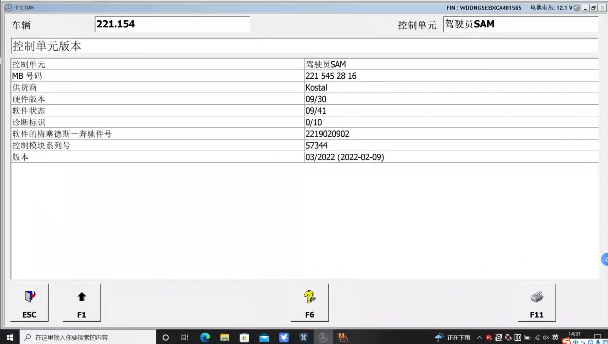
2🡻从控制单元获取到的信息，准备好相应的通讯文件(CBF)和编程文件(CFF)
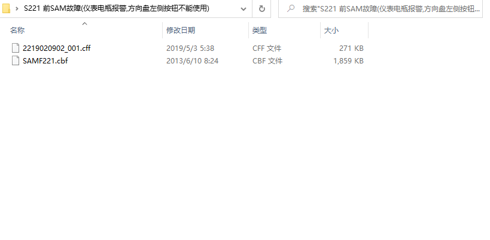
3🡻打开DTS保存前SAM控制单元的设码数据(不需要解锁)
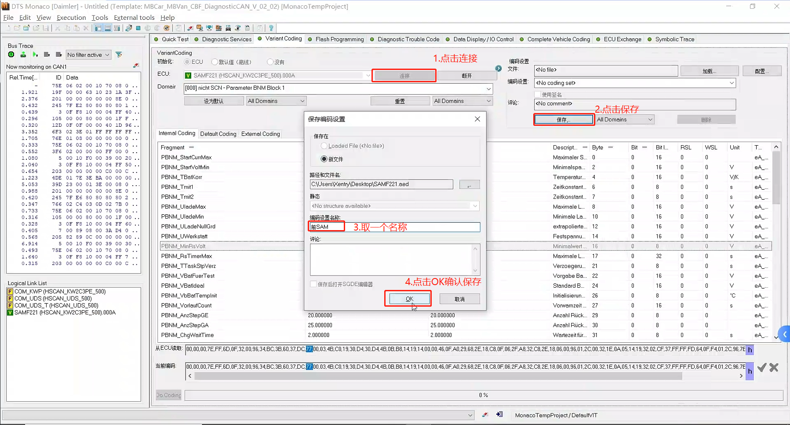
4🡻查看一下设码数据
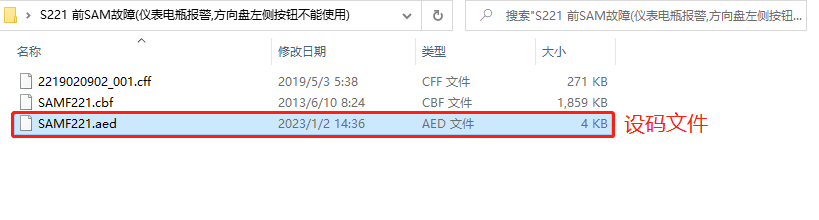
5🡻加载编程文件
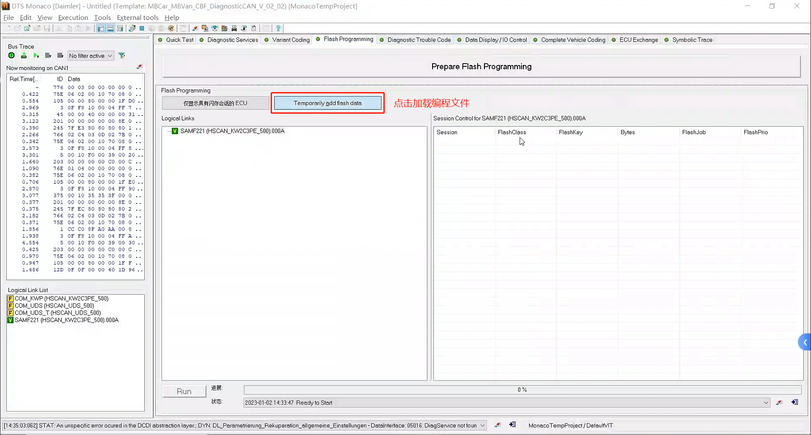
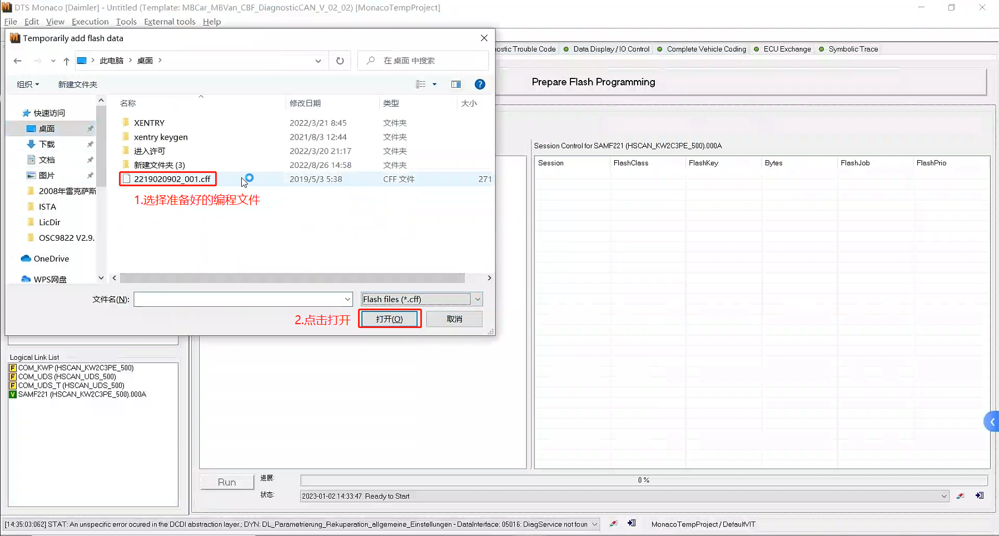
6🡻开始编程(不需要解锁)
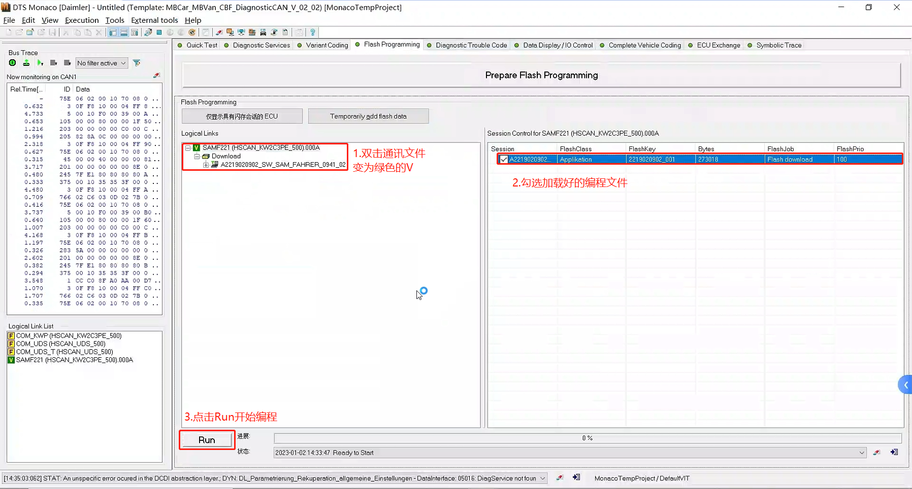
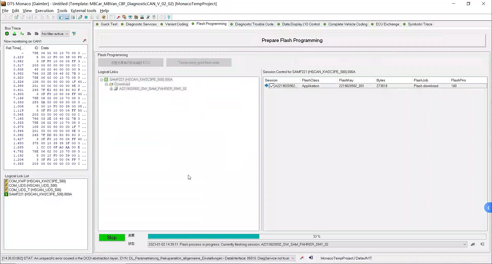
7🡻当Stop按钮(绿色背景)变为Run按钮(白色背景)并且进度条变为100%表示编程成功完成
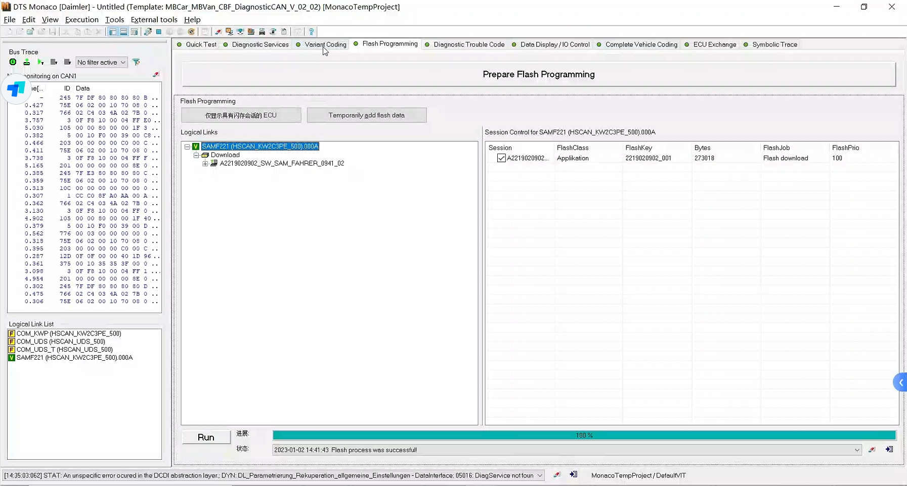
8🡻如果编程完直接设码会报错
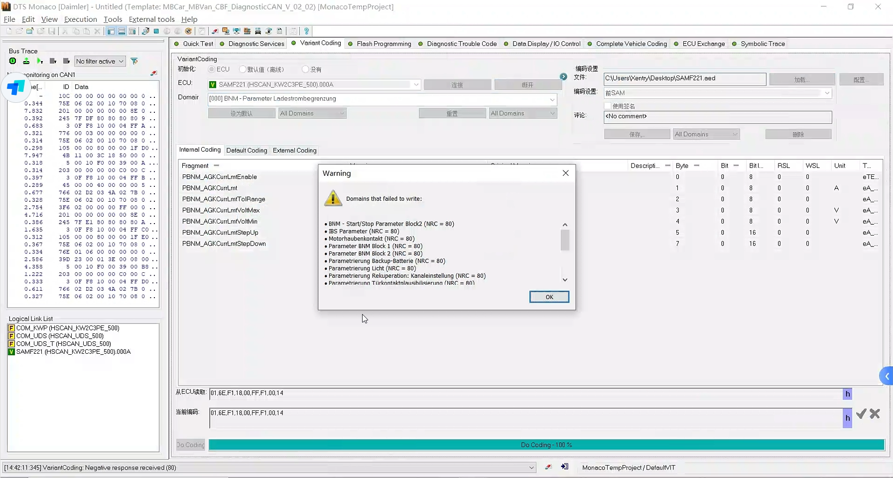
9🡻编程完之后需要将软件重置一下
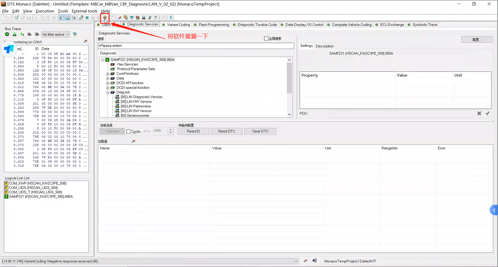

10🡻加载保存好的设码文件
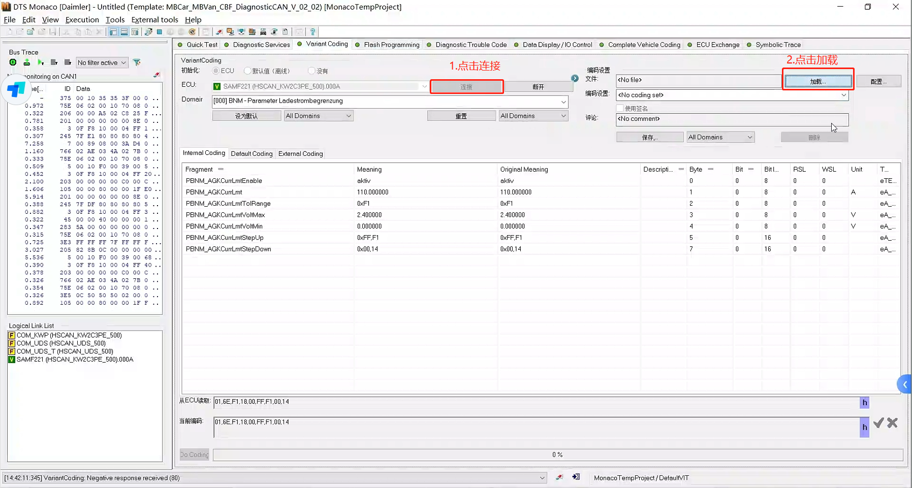
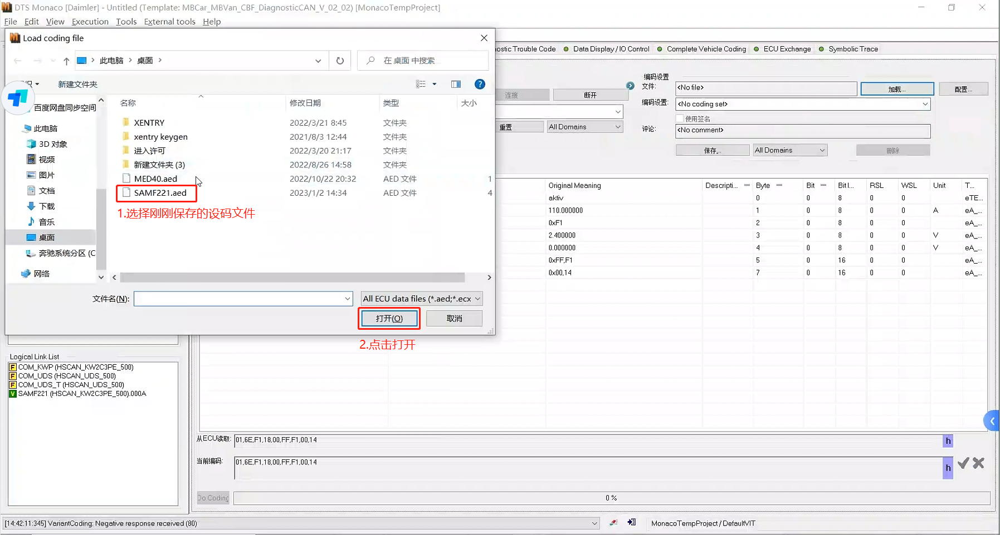
11🡻可以看到编程完很多区段设码数据有改变
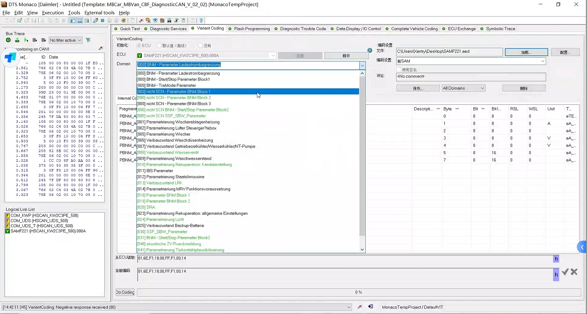
12🡻对前SAM控制单元设码(不需要同步到底层数据)
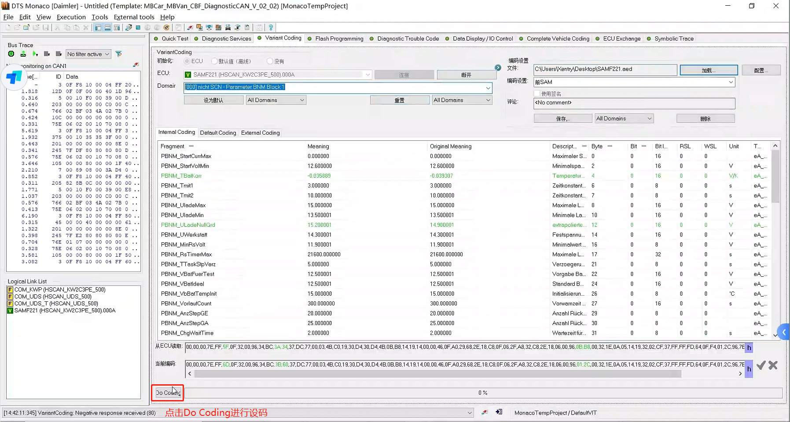
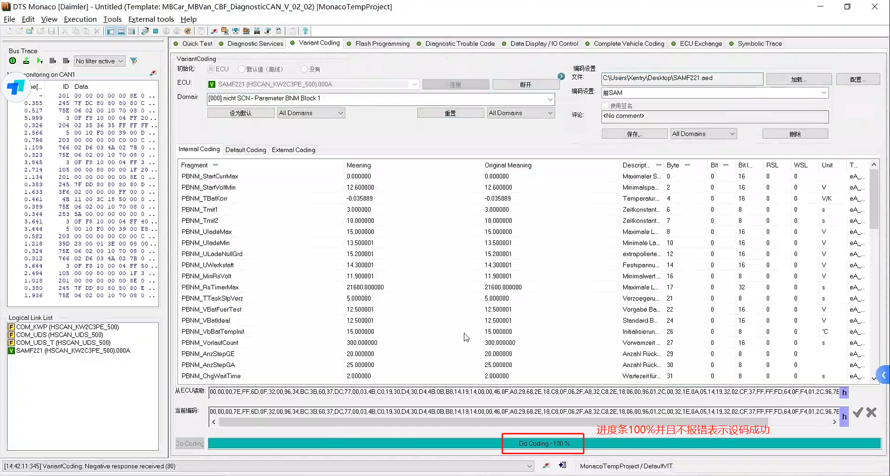
13🡻设码完成后直接退出DTS，然后在DAS中删除全车控制单元中的故障代码就完成
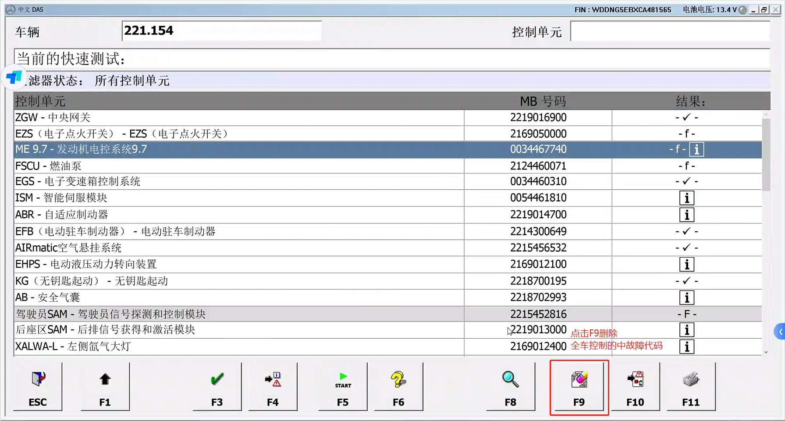